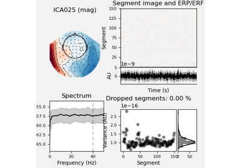
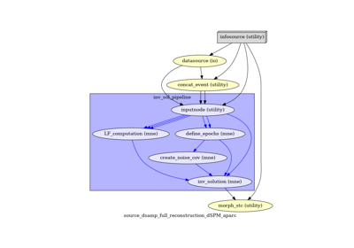

FACE dataset¶
These examples demonstrate how to process 1 participant of the FACE dataset from Wakeman and Henson (2015). The data consist of simultaneous MEG/EEG recordings from 19 healthy participants performing a visual recognition task. Subjects were presented images of famous, unfamiliar and scrambled faces. Each subject participated in 6 runs, each 7.5 min in duration.
Here, we focus only on MEG data and use create_pipeline_preproc_meeg() to preprocess the MEG raw data and create_pipeline_source_reconstruction() to perform source reconstruction of time-locked event-related fields.


02. Preprocess MEG data

03. Compute inverse solution